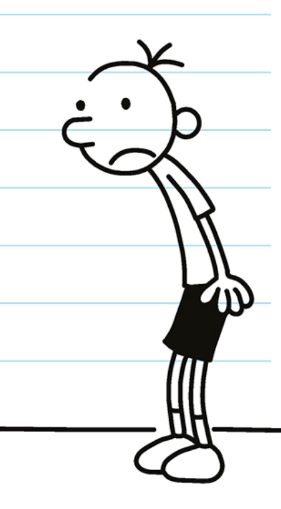
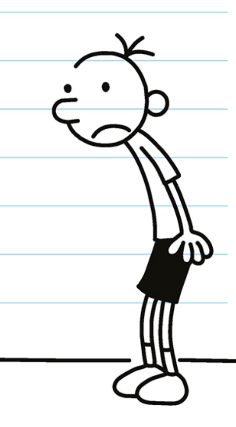

My Favorite Hobby: Reading Books!

My name is Reet, and I am 11 years old. My favorite hobby is reading books because it feels like you are in a whole new world when you read the story. I mostly like chapter books in particular because they are usually big books that are 200-300 pages. I also like books that don't have pictures because then, you can use your own imagination and creativity to picture the scenes in the story. It's definitely awesome! Anyways, my favorite book genres are realistic fiction and fantasy! I like realistic fiction books because they are based off of real-world situations, and you can learn important lessons from them, even though the setting of the book and the characters usually aren't real. I also like fantasy books, because even though there are usually mythical creatures in fantasy books, they make you enter a whole different world where it feels like the make-believe characters are actually real. Reading is amazing, isn't it? Lastly, these are all of my reasons why my favorite hobby is reading books, why I like chapter books/books that don't have pictures, and why I like certain genres!!!

.png) 
